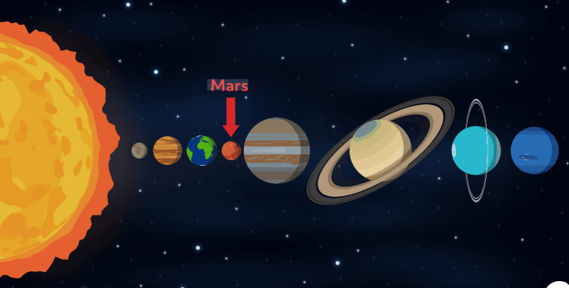

About Mars
Mars is often called the “Red Planet” because of iron-rich dust on its surface. It has seasons, polar ice caps, and evidence that liquid water may have flowed long ago.
Mars has the tallest volcano in the Solar System: Olympus Mons.
A dedicated page with accessible interaction: a quick fact toggle + a mini quiz.
Mars is often called the “Red Planet” because of iron-rich dust on its surface. It has seasons, polar ice caps, and evidence that liquid water may have flowed long ago.
Mars has the tallest volcano in the Solar System: Olympus Mons.

aria-expanded and shows/hides content
using the hidden attribute.
aria-live="polite" so screen readers announce it.